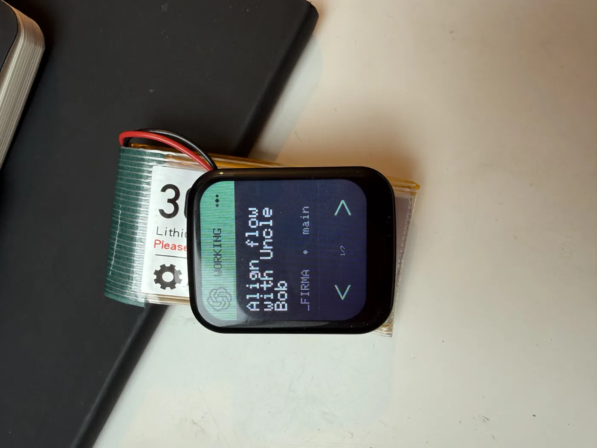
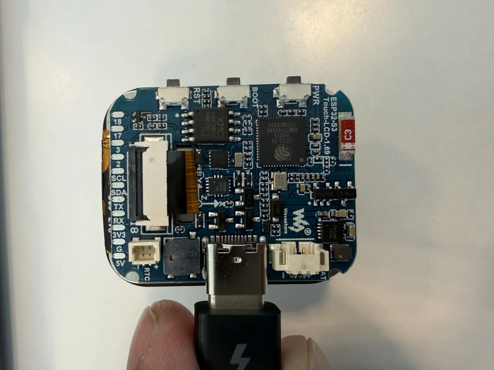
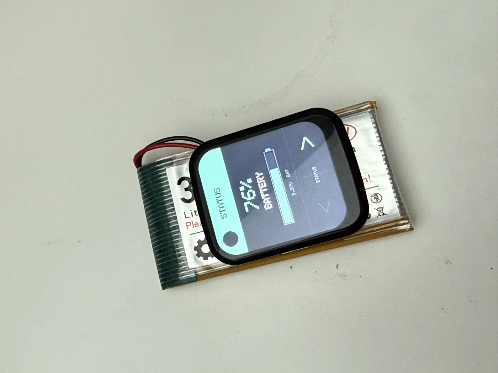
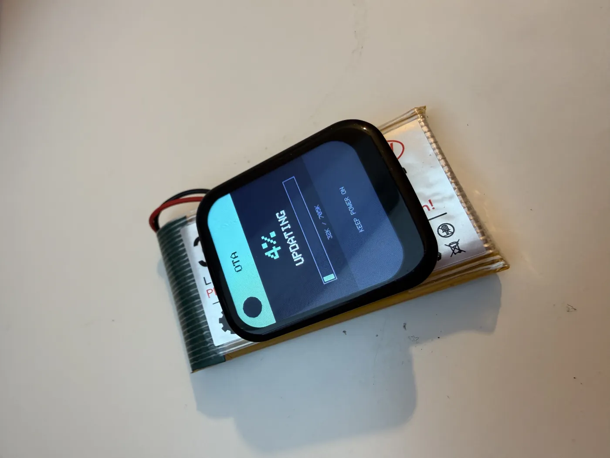

Open Source · Hardware
Buddy: ein physisches Statuslicht für lokale KI-Agenten
Wer mehrere Coding-Agenten parallel auf dem Mac laufen lässt – Codex, Claude, vielleicht noch eine Pi-Session – kennt das Problem: Man weiß nie genau, welche Session gerade arbeitet, welche fertig ist und welche seit zehn Minuten auf eine Freigabe wartet. Ständig zwischen Terminal-Tabs zu wechseln, um nachzusehen, kostet Aufmerksamkeit. Buddy ist mein Versuch, diesen Status aus den Tabs herauszuholen: nicht noch ein Fenster auf dem Bildschirm, sondern ein kleines physisches Display auf dem Schreibtisch.
Buddy verwandelt ein angeschlossenes
Waveshare ESP32-S3-Touch-LCD-1.69 in ein USB- oder
Bluetooth-LE-gesteuertes Signal für lokale Agenten und Skripte. Das Display zeigt für jede Session einen
Zustand an: WORKING, DONE, APPROVAL, QUESTION oder
ERROR. Ein Blick zur Seite genügt, statt den Fokus zu unterbrechen.

_FIRMA auf dem Branch main – Zustand WORKING, ohne in den Terminal-Tab zu wechseln.Update
Buddy läuft jetzt auch mobil: Mit einem kleinen LiPo-Akku braucht das Gerät kein dauerhaftes
USB-Kabel mehr und kann frei auf dem Schreibtisch stehen. Die STATUS-Seite zeigt Ladezustand und
Spannung an, neue Firmware lässt sich danach drahtlos per BLE einspielen. Passt direkt:
dieser 3,7-V-LiPo-Akku auf amazon.de ↗.
Worauf Buddy aufsetzt
Der eigentliche Code in diesem Projekt ist überschaubar – das Interessante ist die Kombination.
Buddy besteht aus zwei Teilen. Auf dem Mikrocontroller läuft eine eigene Firmware, geschrieben in nativem
Arduino/PlatformIO. Diesen Weg hat das Projekt bewusst gewählt, weil das Waveshare-Board einen
Power-Latch (SYS_EN) früh im Boot-Prozess setzen muss – ein älteres MicroPython-Experiment liegt
noch im Repo unter device/main.py, aber die native Firmware in src/main.cpp ist der
verlässliche Pfad für dieses Board.

Der zweite Teil sind Python-Werkzeuge auf dem Mac, die den Zustand der Agenten beobachten und über die passende
Verbindung an Buddy schicken. Das Board meldet sich als native USB-Serial-Schnittstelle und stellt zusätzlich
einen BLE-Dienst namens Buddy bereit. Die BLE-Brücke nutzt die Bibliothek bleak –
eine der wenigen echten externen Abhängigkeiten.
Wie es technisch funktioniert
Der Kern ist ein einfaches Kommando-Tool. Man sagt Buddy von der Kommandozeile aus, in welchem Zustand eine benannte Agenten-Session ist:
python3 tools/buddy_signal.py busy codex
python3 tools/buddy_signal.py done codex
python3 tools/buddy_signal.py approval codex
python3 tools/buddy_signal.py question claude
python3 tools/buddy_signal.py error pi
python3 tools/buddy_signal.py idle
Für echte Benachrichtigungen mit Projektkontext gibt es buddy_notify.py. Es schickt einen
strukturierten Payload aus Zustand, Projektordner, Branch und einem stabilen Fokus-Schlüssel – damit mehrere
Sessions im selben Projekt und Branch auf dem Display getrennt bleiben. Interessant wird es durch die
Automatisierung: Drei LaunchAgents auf dem Mac beobachten die lokalen Session-Logs von Codex, Claude und Pi
und senden vollautomatisch busy, done, approval, question
oder error, je nachdem, was der Agent gerade tut. Die Standard-Verbindung ist
auto: Existiert der BLE-Brücken-Socket, wird zuerst BLE versucht, sonst USB-Serial.
Buddy ist nicht nur Anzeige, sondern auch Eingabe. Zeigt das Display DONE, holt ein Tippen auf
den Touchscreen die passende Mac-App in den Vordergrund – Codex-Desktop-Sessions aktivieren Codex,
Ghostty-gestartete Terminal-Agenten holen den exakten Ghostty-Tab nach vorn. Das Display behält die letzten
25 Sessions, zwei große Touch-Flächen unten blättern nach links und rechts. Damit man auf einen Blick sieht,
welcher Runner gemeint ist, nutzt die Oberfläche anbieter-typische Farbpaletten: warmes Elfenbein und
Terrakotta für Claude/Anthropic, ein helles Neutralgrau mit grünen Akzenten für Codex/OpenAI, eine dunkle
Terminal-Optik mit Cyan für Pi.
Selbst ausprobieren
Man braucht das passende Waveshare-Board und einen Mac. Die Firmware wird mit einem virtuellen Environment und PlatformIO gebaut und geflasht:
python3 -m venv .venv
. .venv/bin/activate
python3 -m pip install -r requirements.txt
make PIO=.venv/bin/platformio build
make PIO=.venv/bin/platformio PORT=/dev/cu.usbmodem101 flashDanach steuern die Python-Tools das Gerät. Wer drahtlos arbeiten will, startet zusätzlich die BLE-Brücke, die eine dauerhafte Verbindung hält und einen lokalen Unix-Socket bereitstellt. Das gesamte Projekt steht unter der MIT-Lizenz frei zur Verfügung.


STATUS-Ansicht mit Akkustand im Batteriebetrieb (hier mit diesem LiPo-Akku), rechts ein Firmware-Update direkt auf dem Gerät (OTA) – ganz ohne Kabel-Reflash.Eine ehrliche Einschränkung
Buddy ist kein poliertes Produkt, sondern ein persönliches Werkzeug für mein lokales Setup. Es ist eng auf
macOS zugeschnitten: Die LaunchAgents, das Aktivieren der richtigen App und die
Touch-to-Focus-Funktion setzen macOS voraus, das exakte Ansteuern eines Codex-Fensters braucht zudem die
Accessibility-Berechtigung für osascript. Unter macOS verlangt CoreBluetooth außerdem einen
kleinen App-Wrapper mit Bluetooth-Beschreibung, sonst kann der reine Kommandozeilen-Python-Prozess abbrechen,
bevor überhaupt der Berechtigungsdialog erscheint. Wer kein Waveshare-Board und keinen Mac hat, kann Buddy
also nicht ohne Weiteres so übernehmen – aber als Vorlage für eigene physische Signale ist das Konzept gut
übertragbar.
Der gesamte Code liegt offen auf github.com/tjansn/Buddy – inklusive Firmware, Python-Tools und den LaunchAgent-Definitionen.